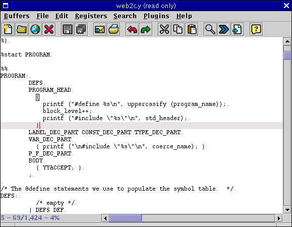

jEdit is very well suited for editing program source code, and has a large number of features that help when doing so, including bracket matching, various indentation commands, auto indent, and commands for commenting.
Misplaced and unmatched brackets are one of the most common syntax errors encountered when writing code. jEdit has several features to make brackets easier to deal with.
If the caret is in front of a bracket, the matching one is highlighted (assuming it is visible on the screen). Bracket highlighting can be disabled in the Editor pane of the Utilities>Global Options dialog box.
Edit>Brackets>Select Code Block (keyboard equivalent: Control-[) will select the code block containing the caret. Double-clicking on a bracket in the text area also has the same effect. A code block is a bracket-delimited range of text.
Edit>Brackets>Locate Bracket (keyboard equivalent: Control-]) will move the caret to the bracket matching the one before the caret.
Edit>Brackets>Go to Previous Bracket (keyboard equivalent: Control-E [) will move the caret to the previous opening bracket. Edit>Brackets>Go to Next Bracket (keyboard equivalent: Control-E ]) will move the caret to the next closing bracket.
Note: jEdit's bracket matching code only checks syntax tokens with the same type as the original bracket for matches. So brackets inside string literals and comments will not cause problems because they will be skipped.
Figure 6-1. Bracket matching in action
